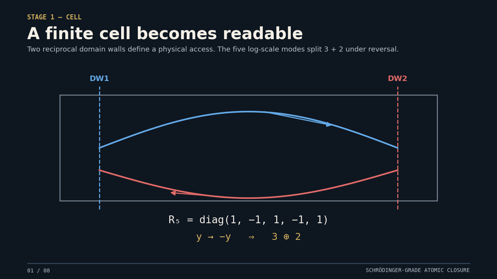

The full end-to-end story and the original Hydrogen3D solver now live in the same page. No iframe, no fake Bohr orbit: the final act is the browser-side 64³ wavefunction itself.

Reciprocal two-wall carrier
The previous acts explain the physical descent. The section below is the same live Hydrogen 3D engine already present in the QGT Companion, now integrated as the endpoint of the story.
iħ∂Ψ/∂t = HQGTΨ — split-operator on 64³ grid. V = −1/r + α·Meff·sech²(r/ℓpen) + ft·cos(2Γτt)·e−r²/2. Initial: |1s⟩ + |2pz⟩ + |3dz²⟩. Norm conserved to ~10⁻¹³ per step (measured live, displayed below). dimostrato
Timescale. One atomic unit of time = 24.19 attoseconds. The loop spans t = 0 → 12 a.u. ≈ 290 as — the natural window of attosecond charge dynamics. Playback is slowed down by a factor of ~3×1016.
Charge migration — the main event. The superposition (|1s⟩+|2pz⟩+|3dz²⟩)/√3 is not stationary. Its dipole ⟨z⟩, measured from this very solver, runs from +1.12 a.u. through zero (t ≈ 4.7) to −1.30 a.u. at t ≈ 12: one full stroke of the electron cloud from the upper lobe to the lower one (slow 2p↔3d beat, period ≈ 24 a.u. ≈ 0.59 fs). Visually: the gold lobe empties into the magenta one.
Breathing drive. The QGT term ft·cos(2Γτt)·e−r²/2 completes 2.8 cycles in the window (T = π/Γτ = 4.34 a.u.) — the pulsing of the core.
Fast beat and filaments. The 1s↔2p energy difference rotates the iso-phase mesh ~2.6 times — the churning of the colours — while the filaments (probability current Im Ψ*∇Ψ) re-orient as the migration proceeds.
What the lobes are. Everything you see is the probability density |Ψ|² of one single electron; the colours encode the local phase arg Ψ. Gold, cyan and magenta are not different particles — they are phase domains of the same electron cloud: 2pz flips sign between upper and lower lobe, 3dz² flips sign between poles and equatorial ring, so different regions carry different relative phases that evolve at different rates.
Why lobes seem to detach. Between phase domains the density passes through genuine nodal surfaces where |Ψ|² → 0: the dark gaps are real zeros of the wavefunction, not empty space between objects. The renderer also clips the display at |xi| < 10.5 a.u. to exclude periodic images of the FFT box (at t = 12 a.u. about 3% of the norm sits within two cells of the boundary and would otherwise re-enter from the opposite face as a spurious detached blob). The norm shown above is always the full, unclipped field.
Where the proton is. At the white-dot marker in the centre: in this solver the proton is not a simulated particle but the fixed centre of the Coulomb potential −1/√(r²+ε²) (infinite-mass approximation, standard for attosecond electron dynamics). The electron cloud breathes and migrates around it.
Spreading and the honest stop. ⟨r⟩ grows from 3.0 to 6.3 a.u.: the shells inflate because the packet is non-stationary. Beyond t ≈ 14 the tail would approach the periodic box boundary, so the loop stops where the numerics are still clean. All figures above (⟨z⟩(t), ⟨r⟩(t)) are measured from the in-page solver and reproducible from its source.
Brightness is probability density, colour is local phase, filaments are probability current. The proton is the fixed centre of the Coulomb potential. Nothing is rendered as a classical electron orbit.
The cinematic prelude stops at the Schrödinger-grade bound-state problem. The live engine then shows internal superposition, charge migration, phase beating and breathing on attosecond scales.
The visual finale is a dynamical atom with measurable response, not a decorative icon. This is the right endpoint for the QGT physical readout story.
This page is self-contained except for local site assets. Upload the qgt_end_to_end_r04/ folder plus the modified root index.html, or replace the site with the full-site bundle supplied with this release.